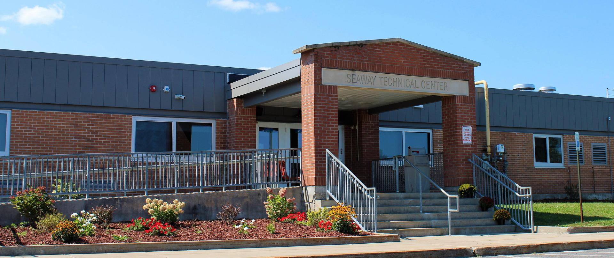

Seaway Technical Center
Located just outside the Village of Norwood, the Seaway Career and Technical Education Center serves nine component school districts. The nearly 500 students who attend Seaway Tech, choose a course of study from one of 11 two-year CTE programs, the one-year New Visions: Medical Careers program, or the Alternative Education Program. Many students who complete a program at Seaway Tech earn industry-recognized certification such as EPA Certification (HVAC/R), ProStart and ServeSafe Certification (Culinary Arts), and New York State DOT Bridge Certification (Metalworking).